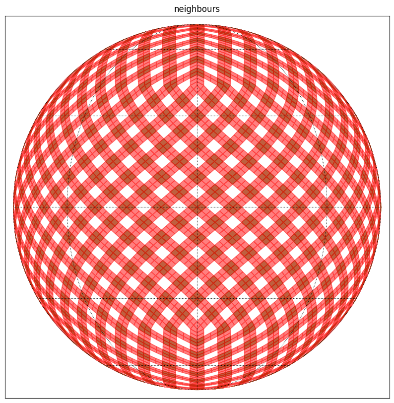

External Neighbours¶
[1]:
# Astropy tools
import astropy.units as u
from astropy.coordinates import Angle, SkyCoord
# Moc and HEALPix tools
import cdshealpix
import mocpy
from mocpy import MOC, WCS
# For plots
import matplotlib.pyplot as plt
import numpy as np
print("healpix version : ", cdshealpix.__version__)
print("mocpy version : ", mocpy.__version__)
healpix version : 0.6.4
mocpy version : 0.13.0
[2]:
ipix = np.arange(12 * 4**3, dtype=np.uint64)
depth = 3
delta_depth = 2
[3]:
help(cdshealpix.external_neighbours)
edges, corners = cdshealpix.external_neighbours(ipix, depth, delta_depth)
Help on function external_neighbours in module cdshealpix.nested.healpix:
external_neighbours(ipix, depth, delta_depth, num_threads=0)
Get the neighbours of specific healpix cells.
This method returns two arrays. One containing the healpix cells
located on the external borders of the cells (at depth: `depth` + `delta_depth`).
The other containing the healpix cells located on the external corners of the cells
(at depth: `depth` + `delta_depth`). Please note that some pixels do not have 4 external corners
e.g. the 12 base pixels have each only 2 external corners.
Parameters
----------
ipix : `numpy.ndarray`
The healpix cells from which the external neighbours will be computed
depth : int
The depth of the input healpix cells
delta_depth : int
The depth of the returned external neighbours will be equal to: `depth` + `delta_depth`
num_threads : int, optional
Specifies the number of threads to use for the computation. Default to 0 means
it will choose the number of threads based on the RAYON_NUM_THREADS environment variable (if set),
or the number of logical CPUs (otherwise)
Returns
-------
external_border_cells, external_corner_cells : (`numpy.ndarray`, `numpy.ndarray`)
external_border_cells will store the pixels located at the external borders of `ipix`.
It will be of shape: (N, 4 * 2 ** (`delta_depth`)) for N input pixels and because each cells have 4 borders.
external_corner_cells will store the pixels located at the external corners of `ipix`
It will be of shape: (N, 4) for N input pixels. -1 values will be put in the array when the pixels have no corners for specific directions.
[4]:
ipix_corner_cells = corners[corners >= 0].ravel().astype(int)
ipix_border_cells = edges.ravel().astype(int)
[5]:
help(MOC.from_healpix_cells)
Help on method from_healpix_cells in module mocpy.moc.moc:
from_healpix_cells(ipix, depth, max_depth) method of builtins.type instance
Create a MOC from a set of HEALPix cells at various depths.
Parameters
----------
ipix : `numpy.ndarray`
HEALPix cell indices in the NESTED notation. dtype must be np.uint64
depth : `numpy.ndarray`
Depth of the HEALPix cells. Must be of the same size of `ipix`.
dtype must be np.uint8. Corresponds to the `level` of an HEALPix cell in astropy.healpix.
max_depth : int, The resolution of the MOC (degrades on the fly input cells if necessary)
Raises
------
IndexError
When `ipix` and `depth` do not have the same shape
Returns
-------
moc : `~mocpy.moc.MOC`
The MOC
[6]:
# Create the moc from corner cells
depth_corner_cells = np.ones(ipix_corner_cells.shape, dtype=np.uint8) * (
depth + delta_depth
)
moc_from_corner_cells = MOC.from_healpix_cells(
ipix=ipix_corner_cells, depth=depth_corner_cells, max_depth=depth + delta_depth
)
[7]:
# Create the moc from border cells
depth_border_cells = np.ones(ipix_border_cells.shape, dtype=np.uint8) * (
depth + delta_depth
)
moc_from_border_cells = MOC.from_healpix_cells(
ipix=ipix_border_cells, depth=depth_border_cells, max_depth=depth + delta_depth
)
[8]:
# Plot the MOC using matplotlib
fig = plt.figure(111, figsize=(10, 10))
# Define a astropy WCS from the mocpy.WCS class
with WCS(
fig,
fov=120 * u.deg,
center=SkyCoord(0, 0, unit="deg", frame="icrs"),
coordsys="icrs",
rotation=Angle(0, u.degree),
projection="SIN",
) as wcs:
ax = fig.add_subplot(1, 1, 1, projection=wcs)
moc_from_corner_cells.fill(ax=ax, wcs=wcs, alpha=0.5, fill=True, color="green")
moc_from_border_cells.fill(ax=ax, wcs=wcs, alpha=0.5, fill=True, color="red")
plt.xlabel("ra")
plt.ylabel("dec")
plt.title("neighbours")
plt.grid(color="black", linestyle="dotted")
plt.show()
